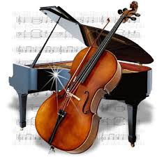

My Entire Life Story Condensed Into a Couple Sentences, Links, and Images.

I'm Laurie, a short, 5'0, sarcastic, and snarky nerd. I'm constantly worried about my life and make self-deprecating jokes and jokingly insult others, so sorry if I offend you.
I spend way too much time on the interwebs and/or obsessing over various TV shows and YouTubers. Yikes, I'm such a cringy teenager. Anyways, below are what I am interested in as of September 2018, including various hobbies and stuff. (It's not a very long list since I'm really lazy and don't want to continue thinking of what a lame fangirl I am.)

Yep. Sherlock fan. Thanks, Mr. Mattern. Now I identify with 90% of Tumblr.

Instinct. It's a buddy cop show. You've never heard of it? Well, no one else has either, don't worry about it.
I play the cello and piano. Not in really recent times- heck I haven't picked up a cello since end of sophomore year. oof.

I identify as a Ravenclaw. wow. what a surprise. the nerd is a ravenclaw.

CLick above to go where I spend 28 hours per day!